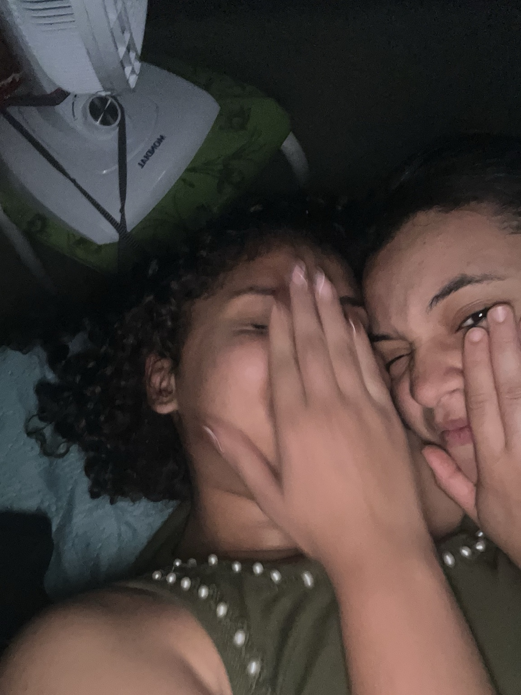

Jogo da memória
Encontre os pares das nossas fotografias. Vamos ver quantas tentativas você precisa?
0 de 6 pares0 tentativas
Toque em duas cartas para começar.
um cantinho nosso
Fiz esse espaço pra guardar algumas coisas nossas e deixar você explorar no seu tempo. Também deixei uma carta que precisava escrever.
Começarum lugar feito com carinho
para lembrar com carinho
Algumas fotos guardam muito mais do que um momento.
Guardam tudo aquilo que a gente sentiu.

Dê o play. As fotos vão mudar devagar, como páginas de um álbum antigo.
Você me contou que Marília Mendonça já foi sua cantora favorita. Essa é a música que eu escolhi dedicar a você. ♡
uma história em capítulos
Uma história de reencontros, escolhas, erros, momentos inesquecíveis e um amor que foi vivido de verdade.
M + K · NOSSA HISTÓRIAOs desenhos são representações poéticas; os acontecimentos e as datas seguem o que Karine contou.
uma carta que eu precisava deixar
Eu não sei muito bem como começar essa carta, porque, sinceramente, eu queria que a gente não tivesse chegado a esse momento.
Quando você me disse que já não sente as coisas como antes, que não é mais a mesma coisa e que está bem ficando longe de mim, doeu. Doeu porque eu ainda sinto. Ainda te amo, ainda sinto sua falta e ainda existem tantas coisas pequenas no meu dia que me lembram você.
Talvez você pense que eu não te amo tanto assim, ou que o que sinto já passou. Mas não passou. Eu queria que você ficasse. Queria que a nossa história continuasse. Não vou fingir que não tenho essa vontade, porque seria mentira.
Ao mesmo tempo, se estar longe de mim está te fazendo bem, eu fico feliz por você. Mesmo que essa felicidade venha misturada com saudade e com um aperto enorme aqui dentro. Eu não quero que você fique por pena, por culpa ou porque leu uma carta triste. Quero que você esteja onde seu coração consiga ficar em paz.
Obrigada pelos momentos, pelos abraços, pelas brincadeiras, pelas fotos e por tudo que foi só nosso. Não vou tratar nossa história como se não tivesse significado. Ela significou muito para mim. Você significou muito para mim.
Eu ainda te amo. E, se um dia você sentir vontade de conversar, pode me procurar. Não estou colocando uma obrigação nas suas mãos nem pedindo uma promessa. Só quero que saiba que meu carinho é verdadeiro e que vou guardar você com muito amor, respeitando o caminho que escolher.
Cuida de você, Mavi. De verdade. Eu queria que você ficasse, mas, acima de tudo, queria que você ficasse bem.
um vídeo meu
Quando quiser, dá o play. Você pode pausar ou assistir de novo.
pausa pra rir
É só uma brincadeira: toca na personagem e marca pontos. Sem levar a sério, hein.
O jogo dura 20 segundos. Vale tocar rápido!
três pequenas surpresas
Tem lembranças para encontrar, palavras para descobrir e um envelope esperando para ser aberto.
Encontre os pares das nossas fotografias. Vamos ver quantas tentativas você precisa?
Toque em duas cartas para começar.
Tem uma cartinha guardada aqui. Só abre quando estiver pronta para ler.
Oie, amor.
Não sei em que dia você vai ver esta atualização, mas quero que saiba que eu te amo, minha princesa.
Desde que começamos a viver isso, tudo foi muito novo e especial, e eu fiquei completamente apaixonada. Desculpa por ter falhado e por todas as coisas ruins que aconteceram. Mas meu amor por você é único e verdadeiro. Eu nunca vou desistir de você, nem te esquecer. Nada disso muda o que eu sinto. Eu quero estar aqui e vou estar aqui.
Princesa, é você quem eu amo e com quem quero me casar. Na loucura, casa comigo agora? KKKK. Eu, você e muito cuscuz com ovo!
Enfim, amor, eu não quero outra vida que não seja essa com você. Eu estou mudada e vou te mostrar isso a cada dia, cada vez mais. E olha, a gente vai se casar, viu? Vamos sim.
Desculpa por tudo, princesa. Eu me arrependo de tudo de ruim. Nunca mais quero te ver chorando… Quero esse olhar bonito pra mim… só pra mim.
Beijos, amor. ♡